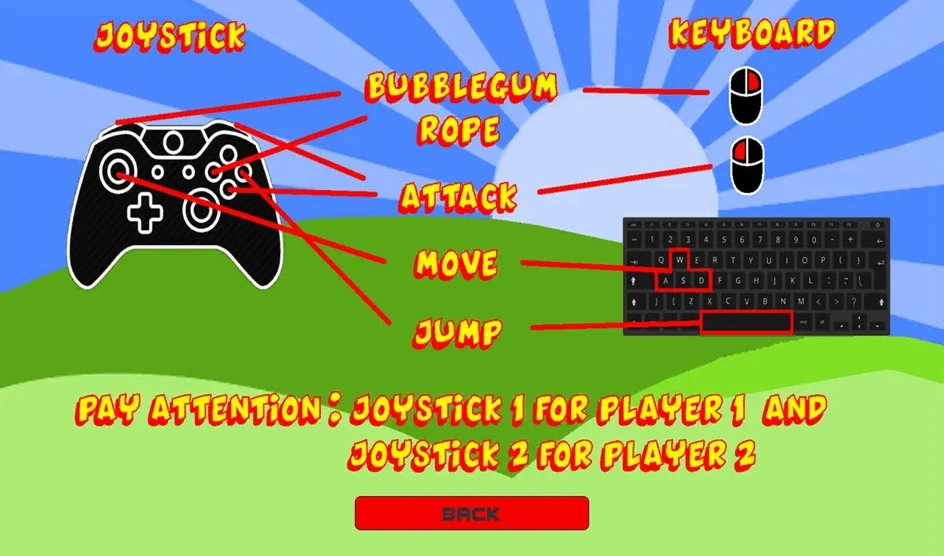
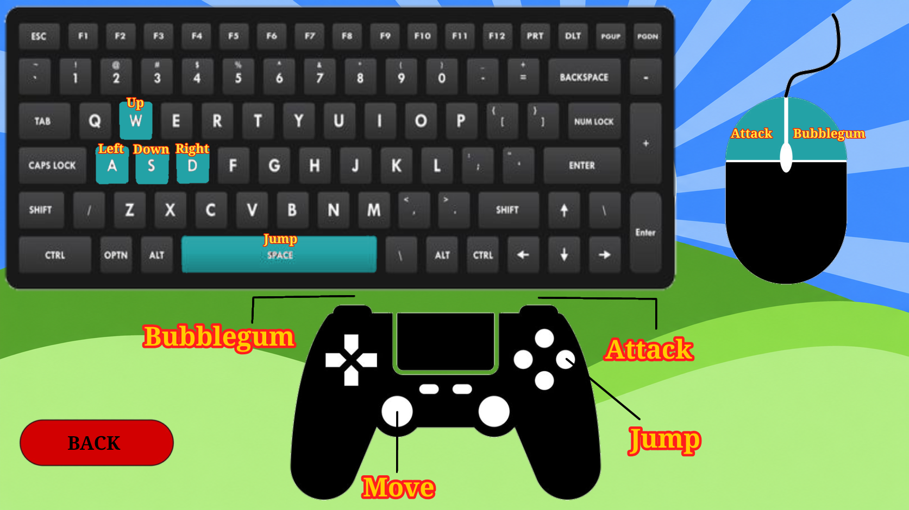
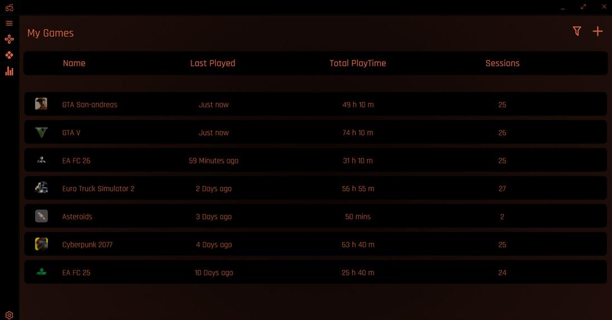
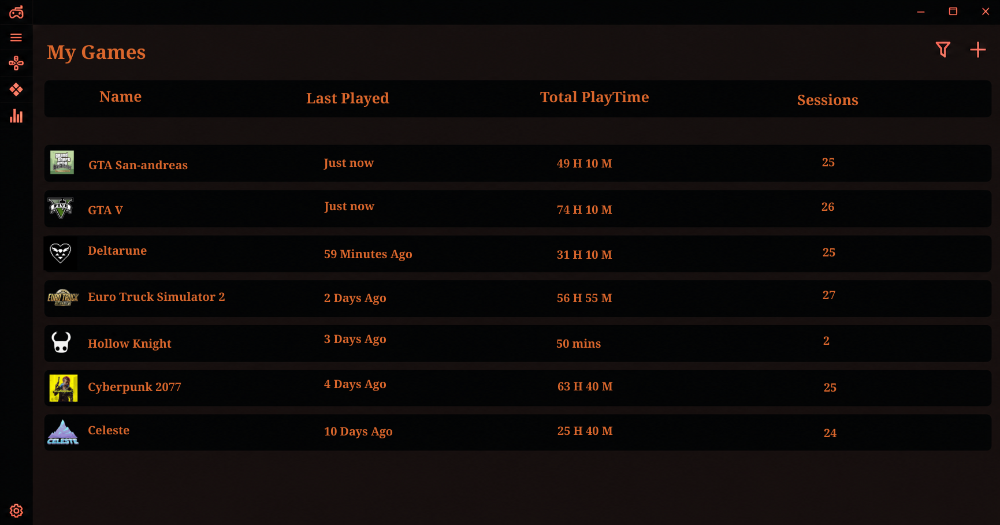
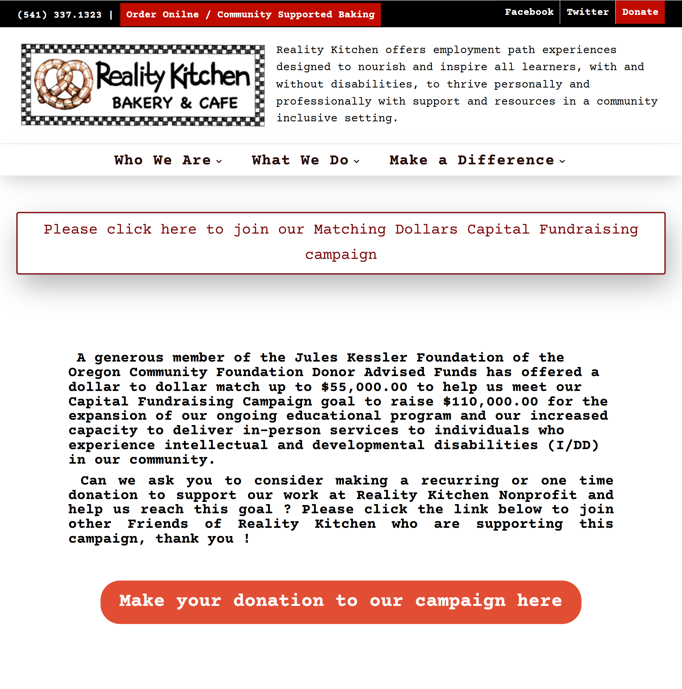
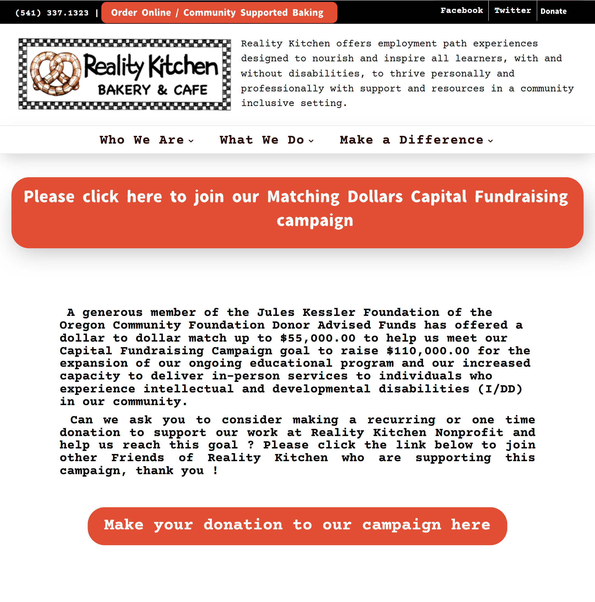

Esse trabalho tem como objetivo apresentar exemplos da diferença positiva que um bom uso dos quatro fundamentos do Desing podem fazer em uma imagem, para isso, primeiro, mostrando mídias que aplicam esses fundamentos de modo errôneo, e logo em seguida mostrando outras que os usam, destacando como essas simples ações melhoram muito a qualidade de leitura.
Essa imagem vem do jogo brasileiro "Mineirinho Ultra Adventures 2", popularmente conhecido por ter muitos erros, tanto de programação quanto de desing.
A tela se trata da explicação de como funciona os comandos do jogo, tanto para o controle como para teclado. Essa imagem se destaca como um bom exemplo da falta do fundamento da proximidade, devido a falta de conexão entre as setas, que deveriam explicar os locais a serem apertados e os textos que explicam as ações que são feitas nesses botões/teclas, o que acaba por dificultar muito a leitura, justamente pela falta de proximidade entre as informações.

Por isso, aplicando os conceitos do fundamento de proximidade, como deixar as informações e detalhes (por exemplo, as setas) perto das explicações que elas devem passar, chegamos a um resultado próximo a da imagem representada uma vez que: na parte do controle, as setas se tornaram muito mais suaves e levando diretamente a explicação que precisam passar.
Assim como passou a ser separada da parte do teclado, a qual passa a ser representada não por setas, mas por uma cor que destaca a tecla a ser apertada, com a explicação da ação dentro da tecla, ações essas que facilitam muito a leitura e compreendimento das informações apresentadas.

Essa imagem vem do site referente ao aplicativo Splitwise, um aplicativo que tem por objetivo dividir despesas e contas entre pessoas que moram em uma mesma residência.
Ela se destaca muito bem como um exemplo de falha do princípio de alinhamento do design, uma vez que o seu layout não segue a forma "padrão" que as pessoas estão acostumadas a ler (que é o padrão de leitura ocidental, o qual ocorre da esquerda para direita, e de cima para baixo). Além desse ponto, nota-se que as fotos e os textos nesta página fazem uma espécie de "zig-zag", alternando entre direita e esquerda, tornando mais difícil a identificação rápida do leitor sobre qual o padrão da ordem de imagens e textos.
Por isso, aplicando os fundamentos conhecidos do princípio de alinhamento do design, chegamos ao resultado da seguinte imagem. Esta estabelece um padrão bem mais definido da ordem que as imagens e textos devem aparecer na página, que no caso se trata das gravuras na esquerda, seguidas dos textos na direita. Essa simples mudança torna a navegação pela página bem mais simples, já que o leitor passa a se localizar melhor, sem precisar se a adaptar a um estilo de layout em "zig-zag", no qual o mesmo não está acostumado.
Essa imagem vem de um post do reddit, mais especificamente do subreddit "Ui-Design", em que as pessoas pedem dicas de como melhorar suas interfaces. Esse em específico é de um usuário que estava criando um launcher de jogos, e acaba por se destacar como um ótimo exemplo do princípio de "Contraste", visto que a página tem cores com tão pouco contraste entre si, que acaba tornando a leitura praticamente impossível, de modo a prejudicar todo o funcionamento da página, apenas por essas simples escolhas de cores

Por isso, aplicando os fundamentos do princípio de contraste na página, chegamos a esse resultado, que já é muito mais satisfatório. As alterações feitas na imagem são apenas as cores, mais especificamente, o marrom do fundo foi alterado para um levemente mais escuro, e o laranja dos textos foi mudado para um tom mais claro, o qual cria um contraste melhor com o fundo. Os ícones também tiveram seu contorno trocado para um tom mais claro, o que facilita muito a identificação dos elementos e a leitura da página como um todo.

Essa imagem vem do site da Reality Kitchen, uma organização sem fins lucrativos dedicada a fornecer alimentação de qualidade para aqueles que necessitam.
A página acaba por se destacar como um claro exemplo da falta do princípio de "Repetição", já que o padrão usado na representação visual dela não parece claro, possuindo muitos botões de formatos diferentes, alguns com preenchimento e outros não, além da alternância de cores, o que causa um estranhamento à primeira vista, pela falta de uma "Ordem" a ser seguida.

Por isso, aplicando os fundamentos de "Repetição" na imagem, chegamos a esse resultado. As alterações feitas são simplesmente definir um padrão visual com mais clareza, para isso substituindo o texto em uma forma quadrada por um com as bordas arredondadas, também trocando a cor de branco para laranja, para combinar com o texto mais abaixo. O mesmo foi feito com o botão mais acima na página, que anteriormente era vermelho forte, além de ser também quadrado.
Somente essas alterações já tornam o padrão visual da imagem muito mais bem definido, e melhoram a qualidade final do design.

Com isso, é possível compreender a importância dos quatro princípios fundamentais do Design, assim como informar como eles funcionam e exemplificar os impactos causados pela aplicação deles em imagens reais.
Muito obrigado pela leitura!